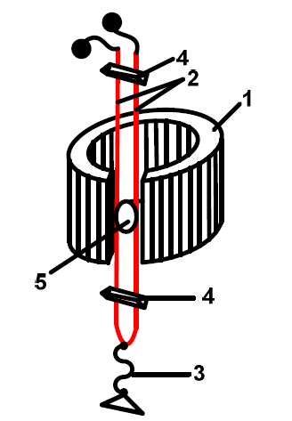

Oshilografi Elektromekanik
Aldo Ziflaj & Rigers Leka
Ceshtjet qe do te trajtohen
Per cfare sherben oshilografi elektromekanik?
Proceset qe kryhen nga oshilografi
Shkalla e kohes
Oshilografet perbehen nga:
- Vibratoret
- Sistemi optik
- Mekanizmi i zberthimit ne kohe
- Shenuesi ne kohe
Vibratori
Mjet magnetoelektrik
Sherben per matje te rrymes e tensionit
Vibratori
Ne rryme alternative
Momenti i Rrotullimit: $$ M_{r} = B \times S \times i \times cos(\beta) $$
Momenti i Kunderveprimit: $$ M_{k} = \sigma \times \alpha $$
Ne rregjimin e stabilizuar
$$ M_{r} = M_{k} $$
$$ B \times S \times i \times cos(\beta) = \sigma \times \alpha $$
$$ \alpha = \tfrac{BS}{\sigma}i = N_{i} \times i $$
Vibratori ferrodinamik: vibrator fuqie
Momenti i Rrotullimit: $$ M_{r} = C_{i} \times i_{i} \times i_{u} $$
Rryma ne lakun e levizshem: $$ i_{u} = \tfrac{u}{r_{u} + r_{s}} $$
Sistemi optik

Zberthimi ne kohe
Zberthimi ne kohe kryhet kur:
→ Filmi zhvendoset me shpejtesi te njetrajtshme
→ Zhvendosja te jete perpendikulare me drejtimin e zhvendosjes se rrezes
Per te plotesuar kushtet, duhen:
- Motor i vogel, i cili rrotullon si kaseten ku mblidhet filmi ose letra, ashtu edhe prizmin me shume faqe
- Perioda e zberthimi:
$$ T_{Z} = \tfrac{1}{a \times n} $$ - Perioda e kurbes:
$$ T = \tfrac{T_{Z}}{m} | m \in \mathbb{Z} $$
Metodat e regjistrimit
- Optike ne film
- Leter fotografike
Ana negative: larja e filmit kerkon kohe!
Metoda me te avancuara
- Regjistrim direkt (boje mbi leter)
- Regjistrim termoelektrik (dyll mbi leter)
- Regjistrim optik (UV mbi leter fotografike)
- Regjistrim ne leter gjysmepercjellese
Parimi i punes: i njejte
Perfundime
- Vibratori manjetoelektrik perdoret per matjen e rrymes dhe tensionit, ndersa per matjen e fuqise perdoret vibratori ferrodinamik
- Metodat e regjistrimit te oshilografeve nuk ndikojne ne principin e punes se vibratoreve.
- Teoria e levizjes per oshilografin mbetet e njejte pavaresisht vibratorit.
- Oshilografet perdoren gjeresisht jo vetem ne tekniken e matjeve por edhe ne shume fusha te tjera te shkences dhe teknikes per studimin e konstruksioneve mekanike.